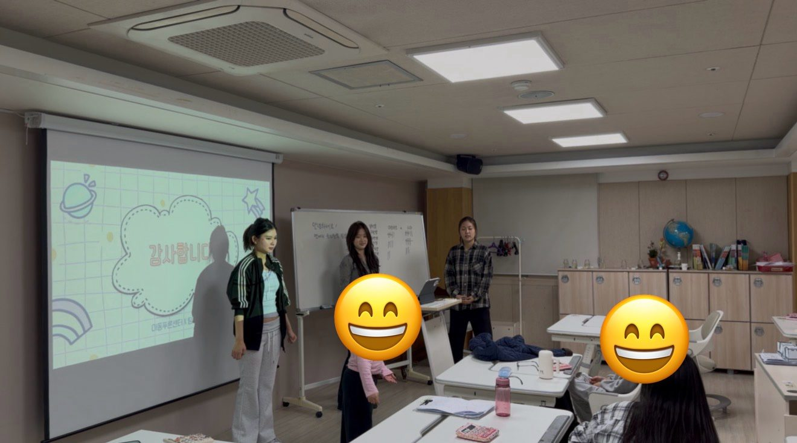
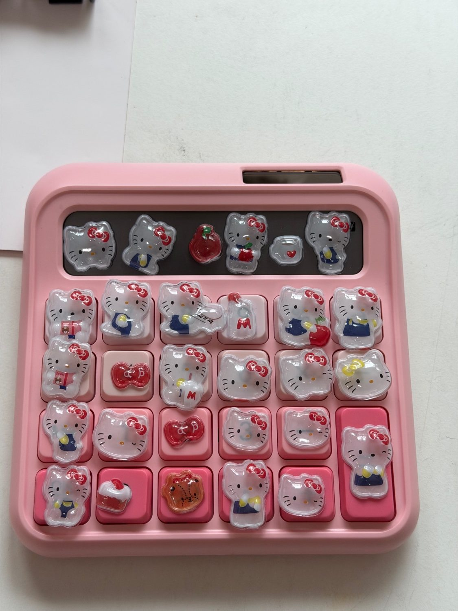
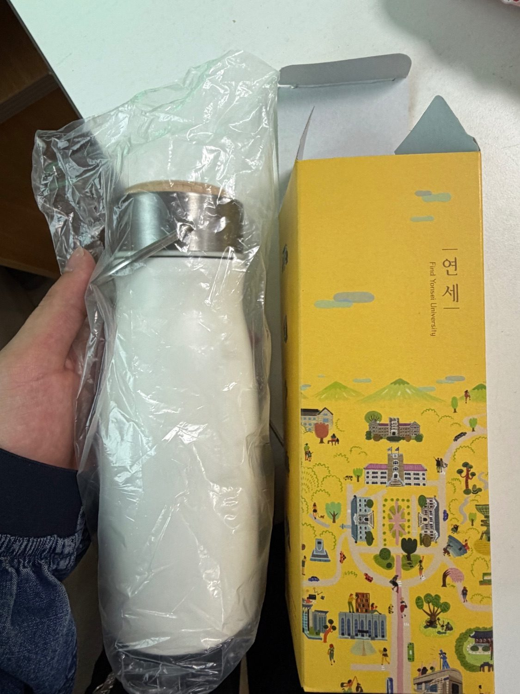

돌아보며
처음 정한 방향이 실제 활동에서 어땠는지 돌아봅니다.
처음 생각한 것
공부보다 함께하는 시간
현장 이야기를 듣고, 공부를 돕기보다 아이들이 친구들과 어울리며 즐겁게 보내는 시간이 더 필요하다고 보았습니다.
해 보니
실제 활동에서는
처음 생각이 현장에서 맞았는지, 예상과 달랐던 점은 무엇인지 적습니다.
활동 후 작성
다음에는
바꾸고 싶은 점
다시 한다면 이어 가고 싶은 것과 바꾸고 싶은 것을 적습니다.
활동 후 작성


시행착오
준비하고 진행하면서 계획대로 되지 않았던 일들입니다.
9월서울 지역 기관 20여 곳에 연락했고, 직접 만나 이야기를 나눈 곳은 두 곳이었습니다.10.8친구랑과의 사전 미팅은 활동으로 이어지지 않았습니다. 대신 그 자리에서 들은 이야기로 공부보다 함께하는 시간에 집중하기로 방향을 바꿨습니다.
활동을 마친 뒤 더 채웁니다.
예산
| 품목 | 금액 |
|---|
소감
활동 후 작성